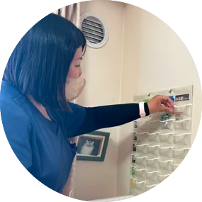
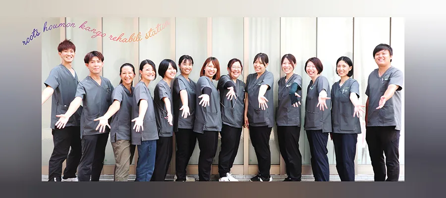

RECRUIT求人情報
ルーツ訪問看護リハビリステーションでは一緒に働いてくれる仲間を募集中です。
ホームページまたはお電話で直接ご連絡をいただき採用に至った場合には、
お祝い金と入社支度金を支給します。(支給要件あり)
ABOUTルーツ訪問看護リハビリステーションについて
history
ルーツ訪問看護リハビリステーションは
利用者様の生きてきた背景(ルーツ)や
働く職員の想いを大切にする会社を創ろうと
2019年3月に昭島市中神町に誕生しました。
地域にしっかり根をはり
地域の方々に愛される会社に成長していけるよう
これからも感謝の気持ちを忘れず1歩ずつ歩んでまいります。
FEATURE特徴
乳幼児、学齢期、成人、高齢者まで（医療保険・介護保険）あらゆるライフステージに対応しています。
精神科・神経難病・小児科を専門とした、看護師・リハビリ療法士が在籍しており訪問範囲は東京都の昭島市を中心に、立川市、東大和市、福生市、羽村市、武蔵村山市、青梅市、瑞穂町の範囲を訪問しています。
訪問看護サービスのイメージがわかずに利用を躊躇している方や、お試し利用をしてみたい方向けに無料相談も行っておりますので、お気軽にご相談ください。
―ご依頼・ご相談はこちらまで―
問い合わせ先
電話番号042-519-5150
担当：看護師 野﨑
SERVICEサービス内容
主治医が「訪問看護サービスの利用が必要」と認めた方を対象としたサービスで看護師や理学療法士、作業療法士、言語聴覚士が、主治医の指示に合わせご自宅に訪問し療養上のお世話や診療の補助を行います。
要支援、要介護の介護保険認定者、特定疾病や小児患者などの健康保険被保険者の方で、医療や介護を必要とする方がご利用対象です。
退院後も自宅での医療管理が必要なとき（栄養剤の点滴が必要など）、自宅での療養生活におけるアドバイスがほしいときにご利用ください。